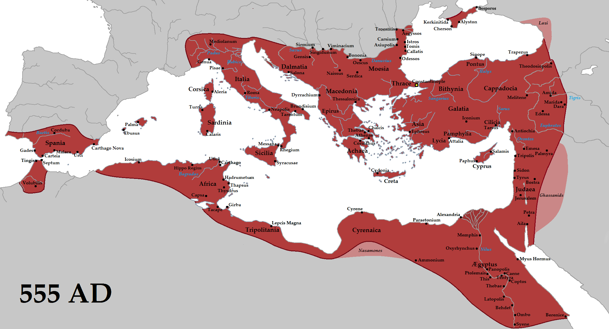

Ensiklopedia Sejarah Dunia
Kekaisaran Byzantium
Pada 400 M, Kekaisaran Romawi terbagi menjadi dua bagian. Kekaisaran Barat diserang suku-suku yang suka berperang dan runtuh pada 476. Namun, Kekaisaran Timur bertahan hingga sekitar seribu tahun lamanya. Kekaisaran Timur tersebut dikenal sebagai Kekaisaran Byzantium karena ibu kotanya, Konstantinopel, pada awalnya disebut Byzantium.
Kekaisaran Yustinianus
Pada abad ke-6, Yustinianus, Kaisar Byzantium, merebut wilayah-wilayah yang pernah menjadi bagian dari Kekaisaran Romawi. Di bawah kepemimpinannya, wilayah Kekaisaran Byzantium sangatlah luas.
Menjalankan kekaisaran
Impian Yustinianus adalah menciptakan kekaisaran besar dan berlandasan agama Kristen. Dibantu oleh istrinya, Theodora, ia membuat sistem hukum baru, dan membangun banyak gereja. Oleh karena itu, banyak pendeta, seniman, dan pedagang yang mengunjungi istananya.
Kesenian Byzantium
Para seniman Byzantium dikenal dengan hasil sulaman dan ukiran gadingnya. Mereka juga membuat berbagai mosaik besar yang berkilauan dan menggambarkan potret keagamaan, yang disebut icon.
Perpecahan agama
Agama Kristen di Kekaisaran Byzantium mengembangkan gaya mereka sendiri dan menggelar misa dalam bahasa Yunani, bukan bahasa Latin. Gereja Byzantium dipimpin oleh Patriark di Konstantinopel.
Setelah terjadi berbagai pertikaian antara Patriark dan Paus (kepala Gereja di barat), akhirnya Gereja Byzantium memisahkan diri dari Gereja di barat.
Mempertahankan kekaisaran
Byzantium terus-menerus berperang melawan kaum Muslim Arab dan Turki. Mereka juga diancam oleh suku-suku di utara, dan melawan pasukan Salib dari Eropa Barat yang seharusnya berpihak kepada mereka
Akhir dari kekaisaran
Setelah kematian Yustinianus, wilayah kekaisaran semakin kecil, hingga pada 1400 hanya di sekitar Konstantinopel saja. Pada 1453, tentara Utsmaniyah (Turki) menyerang kota. Setelah enam pekan bertempur, Byzantium menyerah dan Kekaisaran pun runtuh.